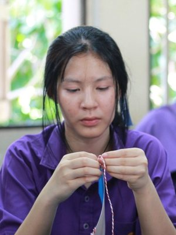
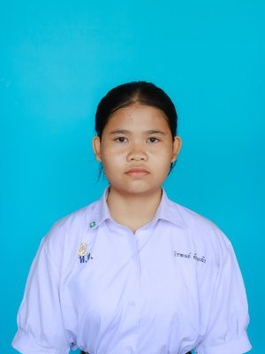

บันทึกหนึ่งภาคเรียนของเรา
ม.5/4
ภาคเรียนที่ 1 ปีการศึกษา 2569
โรงเรียนพรตพิทยพยัต ลาดกระบัง กรุงเทพมหานคร
0 กิจกรรม 0 ภาพ 0 เดือนแห่งความทรงจำ
ถึงผู้ปกครองนักเรียน ม.5/4 ทุกท่าน
ตลอดภาคเรียนที่ 1/2569 ที่ผ่านมา ลูก ๆ ของท่านได้ผ่านช่วงเวลาสำคัญร่วมกันมากมาย ตั้งแต่เช้าวันเปิดภาคเรียน คาบโฮมรูมแรก กิจกรรมพี่น้องสายรหัส งานจิตอาสา การแข่งขันกีฬา การช่วยกันเก็บกวาดหลังงานคณะสี กิจกรรมสัปดาห์วันวิทยาศาสตร์ ไปจนถึงวันที่เพื่อน ๆ ได้รับเกียรติบัตรในงานเกียรติยศแห่งพรตพิทยพยัต
ครูที่ปรึกษารวบรวมภาพบรรยากาศทั้งหมดไว้ในหน้านี้ เพื่อให้ท่านได้เห็นว่านักเรียนเรียนรู้ ทำงานร่วมกัน และเติบโตขึ้นอย่างไร ท่านสามารถกดดูภาพในแต่ละกิจกรรม หรือเปิดอัลบั้มต้นฉบับใน Google Drive เพื่อบันทึกภาพไว้เป็นที่ระลึกได้ทุกภาพ
ด้วยความเคารพ
ครูนพพล ภาณุสุวัฒน์ และ ครูศจินันท์ ตาตะนันทน์
ครูที่ปรึกษาชั้นมัธยมศึกษาปีที่ 5/4
ทำเนียบเกียรติยศ ภาคเรียนที่ 1/2569
ขอแสดงความยินดีกับนักเรียน ม.5/4
ม.5/4 มีผลการเรียนเฉลี่ยทั้งห้อง 3.53 อยู่อันดับ 3 จาก 15 ห้องของระดับชั้น นักเรียนผ่านทุกรายวิชาครบ 100% และผลการเรียนกว่า 72% เป็นเกรด 4 ครูที่ปรึกษาขอชื่นชมนักเรียนทุกคน และขอเชิดชูนักเรียนที่โดดเด่นทั้งสองด้านดังนี้
ผลการเรียนสูงสุด 10 อันดับ
อันดับ 10 มีคะแนนเท่ากัน 2 คน จึงมีทั้งหมด 11 คน
- 1นายภัทรพงศ์ พลรักษา4.00อันดับ 1 ร่วมของระดับชั้นได้ 4.00 ต่อเนื่อง 2 ภาคเรียน
- 2นายอาทิตย์ เกตพิจิตร3.86อันดับ 66 จาก 560 คนพัฒนาขึ้น +0.30
- 3นายภัทรพล สมเสร็จ3.81อันดับ 93 จาก 560 คน
- 3นางสาววิกานดา ศรวิเศษ3.81อันดับ 93 จาก 560 คนพัฒนาขึ้น +0.27
- 3

นางสาวมนัญชนก ดอกรัก3.81อันดับ 93 จาก 560 คนนักเรียนใหม่ 1/2569 - 6นายจิรภัทร เอี่ยมเจริญ3.80อันดับ 105 จาก 560 คน
- 7นายธนวัฒน์ บุรพรัตน์3.77อันดับ 124 จาก 560 คน
- 7นายธนกฤต แก้วบุญเรือง3.77อันดับ 124 จาก 560 คน
- 7นางสาวจิรภิญญา นวลวัน3.77อันดับ 124 จาก 560 คน
- 10นายพงศ์ณภัทร์ นิโรจน์สุวรรณ3.72อันดับ 151 จาก 560 คน
- 10นายภาคิน กล้าวิเศษ3.72อันดับ 151 จาก 560 คน
พัฒนาการสูงสุด 10 อันดับ
เทียบเกรดเฉลี่ยภาคเรียนที่ 1/2569 กับภาคเรียนก่อนหน้า
- 1นายภวัต คุ้มอิ่มเอิบ+2.11เกรดเฉลี่ย 1/2569 3.45อันดับ 1 ของระดับชั้น
- 2นางสาวมนัญชนก ดอกรัก+1.52เกรดเฉลี่ย 1/2569 3.81อันดับ 3 ของระดับชั้น
- 3นายอาทิตย์ เกตพิจิตร+0.30เกรดเฉลี่ย 1/2569 3.86
- 4นางสาววิกานดา ศรวิเศษ+0.27เกรดเฉลี่ย 1/2569 3.81
- 5นางสาวปริฉัตร พลายภิรมย์+0.25เกรดเฉลี่ย 1/2569 3.31
- 6นายชนธร ม่วงใหม+0.24เกรดเฉลี่ย 1/2569 3.06
- 7นางสาวศศิลดา เสนาะ+0.23เกรดเฉลี่ย 1/2569 3.71
- 8

นางสาววิรากานต์ เซียงหลิว+0.20เกรดเฉลี่ย 1/2569 3.63 - 9นายสรัล หมายพึ่ง+0.13เกรดเฉลี่ย 1/2569 3.63
- 10นางสาวกษมา บุญตาสุทธิ+0.12เกรดเฉลี่ย 1/2569 3.40
บ้านหลังใหม่ที่อบอุ่น
นายภวัต คุ้มอิ่มเอิบ และนางสาวมนัญชนก ดอกรัก ย้ายมาเรียนที่ ม.5/4 ในภาคเรียนที่ 1/2569 และมีผลการเรียนเพิ่มขึ้นสูงที่สุดเป็นอันดับ 1 และอันดับ 3 ของระดับชั้น สะท้อนบรรยากาศของห้องที่เพื่อนพร้อมต้อนรับ ช่วยเหลือกัน และตั้งใจเรียนไปด้วยกัน
วารสารห้องเรียน ม.5/4 ฉบับที่ 1
รวมทำเนียบเกียรติยศ บันทึกกิจกรรม และข่าวจากห้องเรียน 28 หน้า กดที่หน้าเพื่อดูขนาดเต็ม หรือดาวน์โหลดเป็นไฟล์ PDF


ไทม์ไลน์กิจกรรม
เรียงตามวันที่ตั้งแต่พฤษภาคมถึงสิงหาคม 2569 กดที่ปุ่มของแต่ละกิจกรรมเพื่อดูภาพทั้งหมด
อีกหลายพันช่วงเวลาที่ถูกบันทึกไว้
ภาพเปลี่ยนไปเรื่อย ๆ จากทุกกิจกรรม กดที่ภาพเพื่อเปิดอัลบั้มนั้น
อัลบั้มภาพทั้งหมด
เลือกกิจกรรมที่ต้องการ ภาพจะแสดงในหน้านี้ทันที และมีลิงก์ไปยังอัลบั้มต้นฉบับใน Google Drive
ภาพสรุปสำหรับแชร์
ภาพชุดเดียวกับที่ส่งในกลุ่ม LINE ผู้ปกครอง กดที่ภาพเพื่อดูขนาดเต็ม หรือบันทึกเก็บไว้ได้
ขอบพระคุณผู้ปกครองทุกท่าน
ทุกกิจกรรมในภาคเรียนนี้สำเร็จได้ด้วยความร่วมมือและกำลังใจจากบ้านของนักเรียนทุกคน ครูที่ปรึกษาพร้อมร่วมดูแลนักเรียน ม.5/4 อย่างใกล้ชิดต่อไปในภาคเรียนที่ 2/2569 หากท่านมีข้อสงสัยหรือต้องการปรึกษาเรื่องใด สามารถติดต่อครูที่ปรึกษาผ่านกลุ่ม LINE ผู้ปกครองได้ตลอดเวลา